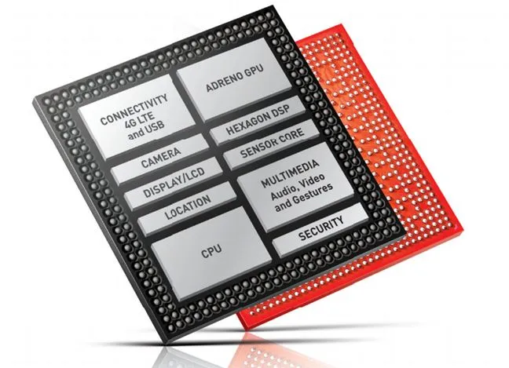
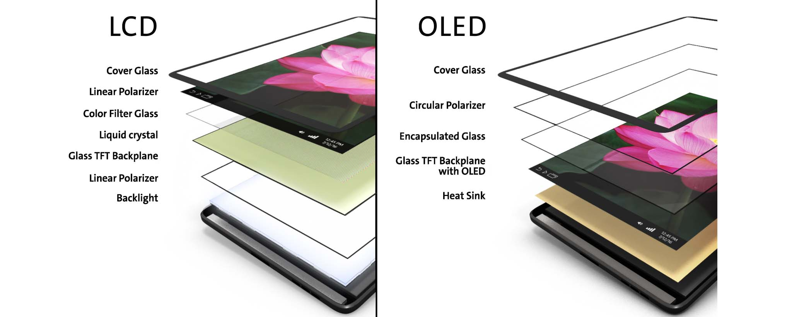
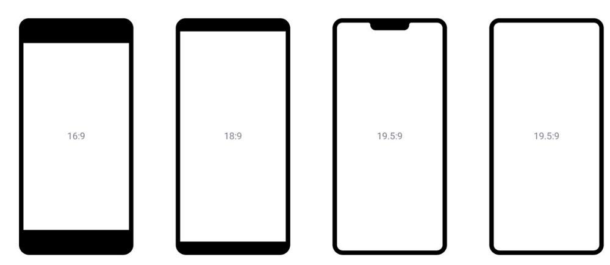
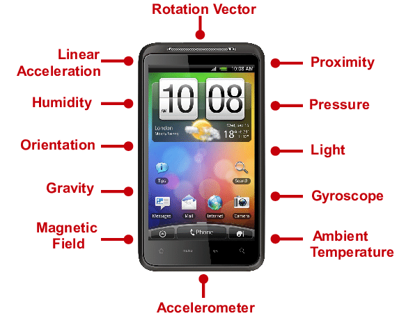
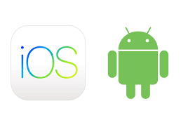
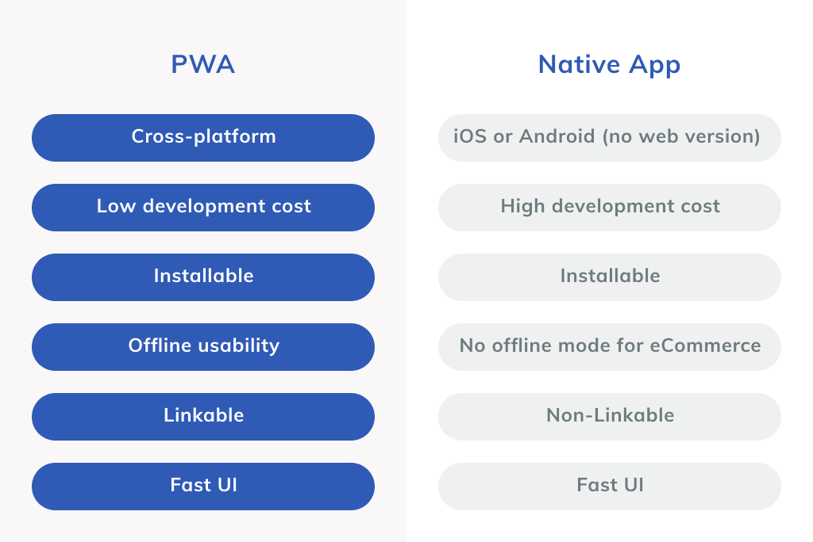
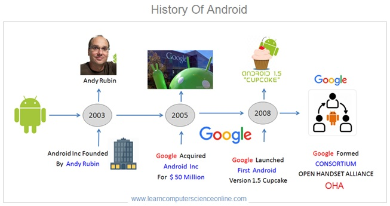
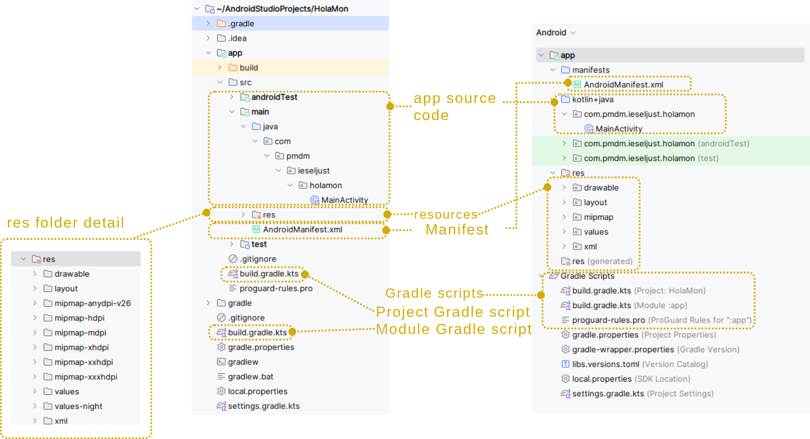

We live in a hyper-connected society where we are
permanently online thanks to mobile devices. These devices
have evolved from being simple communication tools to
becoming authentic personal assistants that help us in our
daily lives.
The evolution of mobile devices has been spectacular,
from the first mobile phones that only allowed voice calls
and SMS to the current smartphones, which are authentic
pocket computers with which we can surf the internet, play
multimedia content, play video games, take high-quality
photos and videos, geolocate ourselves, etc.
This evolution has been possible thanks to the
development of hardware (processors, memory, screens,
batteries, sensors, etc.) and software (operating systems
and applications).
The first true smartphone was the IBM
Simon, manufactured in 1992 and distributed in the
United States between 1994 and 1995.
IBM Simon
1.1.1 Types of Mobile
Devices
There are different types of mobile devices, the most
common being:
Mobile Phones / Smartphones: They
are the most common and popular. They have a touch screen
and an operating system (Android, iOS) that allows the
installation of applications (apps) that expand their
functionalities.
Tablets: They are devices with a
screen size larger than that of a smartphone but smaller
than that of a laptop. They are ideal for consuming
multimedia content (videos, books, magazines, internet
browsing) and are widely used in the educational
field.
Wearables: They are devices that can
be worn on the body. The most common are smartwatches and
smartbands (or activity bands). They are usually companions
to the smartphone and are used to monitor physical activity,
receive notifications, control music playback, etc.
Cars (Smart/Connected Cars): Modern
vehicles are now mobile computing platforms with internet
access, operating systems, and app support, enabling
connectivity with phones, other cars, and
infrastructure.
ChromeOS Devices (Chromebooks):
These are lightweight, portable laptops and tablets that
primarily rely on web and cloud-based applications, with
added support for Android and Linux software.
TVs (Smart TVs): Traditional
televisions enhanced with integrated operating systems and
internet connectivity, allowing users to stream content,
browse the web, and interact with other smart
devices.
XR (Extended Reality): An umbrella
term for immersive technologies, including:
VR (Virtual Reality): Fully digital,
immersive experiences using headsets.
AR (Augmented Reality): Digital
overlays on the real world, viewed via smartphones or
glasses.
MR (Mixed Reality): Advanced AR where
digital and physical objects interact in real time.
E-book readers: Devices designed
specifically for reading digital books. They use electronic
ink technology (e-ink), which mimics the appearance of paper
and is much less tiring for the eyes than a conventional
screen. Their autonomy is very high.
Types of mobile
devices
1.1.2 Characteristics
of Mobile Devices
The main characteristics that define a mobile device
are:
Mobility: Its small size and weight,
together with its wireless connectivity, allow it to be used
anywhere.
Wireless Connectivity: They can connect
to the internet and other devices without cables, mainly
through Wi-Fi and mobile data networks (3G, 4G, 5G). They
also usually have other types of wireless connectivity such
as Bluetooth, NFC, or GPS.
Touch Screen: They are the main input
and output element. Interaction is done through gestures
(tap, double-tap, drag, pinch, etc.).
Sensors: They incorporate numerous
sensors that allow them to interact with the environment:
Accelerometer: Measures acceleration
and tilt.
Gyroscope: Measures orientation and
rotation.
Magnetometer: Digital compass that
detects magnetic north.
Proximity Sensor: Detects if the device
is close to an object (e.g., turns off the screen during a
call).
Fingerprint Sensor / Face Recognition:
For device unlocking and authentication.
Autonomy: They have a battery that
allows them to operate for a certain time without being
connected to the electrical grid. Autonomy is a key
factor.
Applications (Apps): Their
functionality is extended by installing applications
downloaded from official stores (Google Play, App Store) or
other sources.
1.1.3 Hardware of a
Mobile Device
1.1.3.1 The Processor
and the SoC
A mobile device contains essentially the same hardware as
a computer, but with a different architecture, as they are
constrained by the device’s smaller size. Therefore, when we
talk about the processor in a mobile device, we must talk
about the SoC or System on a
Chip, an integrated circuit that combines different
parts of the system, such as the CPU itself, the GPU
(graphics processor), RAM, ROM, and USB or Wi-Fi
controllers.
It is worth highlighting the importance of the British
company ARM Holdings in the world of mobile
processors. It is the creator of the architecture of the
same name, ARM (Advanced RISC Machines), a
32- and 64-bit RISC (Reduced Instruction Set
Computer) architecture that is present in the
majority of mobile devices.

SoC
1.1.3.2 RAM Memory
The type of RAM memory found inside the SoC is dynamic
(DRAM), which requires periodic refreshing and is very fast.
To reduce energy consumption and minimize heating, this RAM
is placed close to the CPU and GPU. This RAM is shared by
both units.
1.1.3.3 Screens on
Mobile Devices
One of the defining characteristics of smartphones is the
screen, through which most of the interaction with the
device takes place.
There are primarily two types of technologies, with
different variations and generations:
LCD or Inorganic:Liquid Crystal
Display, which lets light pass through based on its
polarity, just like computer monitors. For this, they have a
backlight panel located behind the display, which can be
made of fluorescent lights or LEDs. Within this type, we
find TFT, LED, IPS, PLS, or Apple’s Retina
displays.
OLED or Organic: These use organic
materials that emit light by themselves when electricity is
applied, meaning they do not need a backlight panel and can
turn individual pixels on or off independently. These are
thinner screens than LCDs, as they have fewer layers, with
lower consumption, higher contrast, and greater brightness.
Furthermore, this manufacturing technology allows panels to
be flexible, leading to mobile phones with foldable or
rollable screens. Within this family, we find AMOLED, Super
AMOLED, or Dynamic AMOLED screens.

LCD vs. OLED
Apart from the screen manufacturing technology, it is
important to know some other characteristics about them.
1.1.3.4 Resolution and
Density
The screen resolution refers to the number of
pixels displayed on it and is determined by the
number of pixels in the horizontal and vertical
directions.
From the resolution, we can determine the aspect
ratio and the density of pixels per inch
(ppi). This density is a measure that relates the
size of the screen to its resolution. Two screens of
different sizes with the same resolution will have different
densities, and therefore, different image quality. Ideally,
this density should be greater than 300 or 400 ppi.
1.1.3.5 Aspect
Ratio
This is the relationship between the width and height of
the screen. Traditionally, this ratio has followed the
widescreen 16:9 format (for every 16 pixels
in width, there are 9 in height). For example, the 1920x1080
format fulfills this proportion.
However, a few years ago, the 18:9 (and
even 19:9) ratio began to become popular, aimed at larger
panels with almost no bezels. This ratio allows a device to
be less wide than another with the same diagonal in a 16:9
format, thereby improving its ergonomics.

Different aspect ratios.
Source:
https://www.movilzona.es/tutoriales/pantalla/relacion-aspecto-pantalla-formatos-ejemplos/
1.1.3.6 Cameras
One of the components that is most often demanded in a
mobile device is the photographic camera or cameras. These
are mainly composed of:
An optical block, which is relatively
limited, although some devices allow for the connection of
an external lens, and
A sensor, composed of an array of
photoreceptors, which translate light signals into
electrical ones, thus obtaining the value for each point in
the image.
Over time, mobile devices have incorporated more cameras,
besides the front and rear ones, so that currently we can
find three, four, or even five cameras (telephoto,
wide-angle, monochromatic, or even infrared).
1.1.3.7 Sensors
Mobile devices can incorporate a wide variety of sensors,
with which we can obtain very diverse information from our
environment. Among the sensors we can find in a mobile
device, the following stand out:
GPS (Global Positioning System):
Provides location services by using a
continuous signal to GPS satellites, allowing it to show
where on the planet we are. This device opens up a whole
range of possibilities such as LBS or Location-Based
Services.
Accelerometer and Gyroscope: The
gyroscope measures the device’s movements thanks to angular
acceleration, even allowing the detection of small
rotations, making it very suitable for, for example,
augmented reality applications. On the other hand, the
accelerometer is less precise and allows detection of the
device’s position relative to the three axes: x, y, and z.
With this, we can determine, for example, if the device is
in a horizontal or vertical position, as well as detect
turns, vibrations, tilt, or collisions.
Light Sensor: Allows the detection
of ambient light, so the device can adjust the screen
brightness to adapt to different lighting
conditions.
Proximity Sensor: Allows the
detection of the distance from the device to other objects
through an infrared LED, and enables, for example, the
screen to turn off when we bring it close to our face during
a call.
In addition to these, we can find many others, such as
biometric sensors (fingerprint or iris readers),
magnetometer, barometer, capacitive sensors, infrared
sensor, heart rate sensor, color spectrum sensor, or
pedometer.

Sensors of mobile
devices
1.1.4 Operating Systems
(OS)
The OS is the most important software that manages the
device’s hardware and allows applications to run. The most
common are:
Android: Developed by
Google. It is the most used OS in the
world. It is an open-source system, which allows
manufacturers to adapt it to their devices.
iOS: Developed by Apple. It is
exclusively used on the company’s devices (iPhone, iPad). It
is a closed-source system, known for its security,
performance, and integration with the Apple
ecosystem.
Others: HarmonyOS (Huawei), etc.

Android and iOs
1.1.5 Applications
(Apps)
Applications are programs designed to perform specific
tasks on mobile devices. There are applications for almost
everything: social networks, messaging, email, photography,
music, video, maps, banking, news, games, etc.
They are mainly downloaded from official stores:
Google Play Store (for
Android).
App Store (for iOS).
Mobile devices have countless uses, among which we can
highlight:
Communication: Calls, video calls,
instant messaging (WhatsApp, Telegram), email, social
networks (Instagram, TikTok, X - Twitter).
Information: Internet browsing, reading
news, consulting Wikipedia.
Entertainment: Listening to music
(Spotify), watching videos (YouTube, Netflix), playing
games.
Photography and Video: Taking photos,
recording videos, editing them, and sharing them.
Navigation and Maps: Geolocation, GPS
navigation (Google Maps), searching for nearby places.
E-commerce: Online shopping, banking
applications, payment with the mobile phone (NFC).
Productivity: Calendar, notes, document
editing, task management.
Health and Sports: Monitoring physical
activity, counting steps, measuring heart rate.
1.1.6 Technologies for
Mobile Application Development
Developing an application that runs natively on a
specific operating system requires using its native
technologies. However, to minimize the need for
platform-specific development, several technologies exist
that aim to enable cross-platform development in the
broadest sense. These range from responsive web applications
to compiled applications, including hybrid or progressive
web applications (PWAs), each with its own advantages and
disadvantages.
Let’s look at each of them, categorized by their distance
from or closeness to native code.
1.1.6.1 WebApps or
Responsive Web Applications
These are applications based on web technologies:
HTML, CSS, and JavaScript. They require
only a web browser to run. Being “responsive” means their
interface adapts to any device. For this type of
application, no native code development is necessary, and
they are entirely cross-platform because they run
on the operating system’s own web browser. Therefore, we
have a single codebase that runs on all platforms. The main
disadvantage is that they do not offer as good a user
experience as native apps and do not allow access to all of
the system’s components.
1.1.6.2 Hybrid
Applications
These use the trio of HTML, CSS, and JavaScript to build
a website that is loaded within a WebView
component—essentially a browser without the navigation bar
or other options—giving it the appearance of a native
application. This type of application can access some device
features, like location or the accelerometer, through this
component. Currently, the most popular framework for
developing hybrid applications is Ionic,
which allows development using other web frameworks like
React, Angular, or Vue.
1.1.6.3 Progressive Web
Applications (PWAs)
Closer to native applications are Progressive Web
Applications (PWAs), which are revolutionizing the
current landscape. These applications incrementally enhance
their functionalities based on the mobile device they run
on, to leverage more potential. They can access hardware,
work offline or with poor connectivity, and offer system
notifications. There are numerous frameworks for PWA
development, including React PWA Library, Angular PWA
Framework, Vue PWA Framework, Ionic PWA Framework, Svelte,
PWA Builder, and Polymer.

PWA vs Native
apps
1.1.6.4 Compiled
Applications
These are technologies that aim to use a single
programming language to generate mobile applications into
the native code of each platform. Some of the most widely
used technologies in this category are:
React Native and NativeScript: They
use JavaScript as their base programming language. However,
instead of building interfaces with HTML, they use the
framework’s own components, which are compiled to native
code, making the use of a WebView as an intermediary
unnecessary.
Flutter: Developed and maintained by
Google, Flutter allows for cross-platform application
development using the Dart language, which
compiles to native code that runs entirely on the device.
Flutter’s way of working involves designing user interfaces
using widgets, integrated directly into the
code. Flutter comes with a set of predefined widgets, such
as buttons, navigation bars, etc.
Kotlin Multiplatform and Compose
Multiplatform: With Kotlin Multiplatform, we can
share code between various platforms (Android, iOS, web,
etc.) using Kotlin as the programming
language. This means we can write an application’s logic
once and reuse it on different platforms, reducing
development time and effort. With Compose Multiplatform, a
technology based on Jetpack Compose, we can create shared
user interfaces for Android, iOS, desktop, and web using
Kotlin. This facilitates the creation of consistent and
reusable user interfaces across various platforms.
To program for iOS (iPhone, iPad, Apple Watch,
etc.), you’ll need a mix of hardware,
software, and knowledge. Here’s a clear
breakdown:
Hardware
Mac computer (MacBook, iMac, Mac Mini,
etc.) iOS development officially requires macOS.
iOS device (optional but recommended)
You can test apps in the simulator, but real device testing
is important.
Software
Xcode (free, from the Mac App
Store)
Apple’s official IDE (Integrated Development
Environment).
Includes editor, compiler, debugger, Interface Builder
(UI designer), and the iOS Simulator.
iOS SDK (comes with Xcode)
Provides APIs, frameworks (UIKit, SwiftUI, Core Data,
ARKit, etc.), and tools needed for building iOS apps.
Apple Developer Account (optional at
first, required for publishing)
Free: lets you learn, run apps on simulator.
Paid ($99/year): required to publish to the App Store
and to install apps on your physical iPhone.
Programming Languages
Swift Apple’s modern language,
recommended for all new projects.
Objective-C older language, still used
in legacy apps and some libraries.
1.1.7 Trends and
Future
The future of mobile devices points towards:
5G Connectivity: Much higher speed and
lower latency, enabling new applications.
Folding screens and new formats.
Augmented Reality (AR) and Virtual Reality
(VR): More integrated into mobile devices.
Artificial Intelligence (AI):
Integrated into the device to improve photography, battery
management, and personalize the user experience.
More and better sensors.
Greater integration with other devices
(Internet of Things - IoT): Controlling the home, the car,
etc., from the smartphone.
1.2 Introduction to
Android development
As we saw previously, there are different technologies
for mobile application development.
In the next units, we will focus on native applications
for the Android operating system, maintained by Google and
based on the Linux kernel.
1.2.1 Origins of
Android
The origins of Android lie with the Palo Alto
(California) company Android Inc., founded
in 2003 by Andy Rubin. This company began
by developing an operating system for digital cameras, but
due to the sector’s low profitability, they decided to pivot
to mobile devices, a market then dominated by Symbian and
Windows Mobile. In 2005, Google acquired
Android Inc., and two years later, alongside the creation of
the Open Handset Alliance—a consortium of various technology
companies aimed at developing open standards for mobile
devices—the first version of Android, Apple Pie, was
announced. This version began to be incorporated into
devices in 2008, and two years later, it
captured nearly half of the market share.

History of
Android
1.2.2 The Android
Operating System
Android is the most widely used operating system for
mobile devices today. As we know, it is an operating system
for touch-screen devices based on the Linux kernel and other
open software standards.
Android is developed as open source
software, meaning both its source code and its issue tracker
are accessible. The Android Open Source
Project (https://source.android.com/) contains the
Android source code, released under the Apache
license.
In June 2025, the latest version of Android, Android 16,
was launched. Since its first version, it has continuously
incorporated updates and new functionalities into the
system. Furthermore, the ease it provides for application
development has resulted in a large community of developers,
whose work has produced over three million apps on the
Google Play Store, the official Android application
repository.
1.2.3
Characteristics
Some of the most relevant characteristics of Android
are:
Adaptable to a wide variety of screen sizes and
resolutions, with support for 2D and 3D graphics libraries
based on OpenGL.
Natively supports multi-touch screens.
Offers local storage through a lightweight database,
SQLite.
Supports a wide range of connectivity technologies.
Includes a web browser based on the
WebKit rendering engine and the V8
JavaScript engine from Google Chrome.
Native applications are programmed with
Java or Kotlin and are
compiled for the ART (Android Runtime) virtual
machine.
Incorporates support for a wide variety of multimedia
formats and streaming.
Supports a vast array of hardware devices and
sensors.
Features a very extensive catalog of applications
through the Google Play service.
1.2.4 Android
Versions
Android has undergone a significant transformation since
its first versions. As a summary, we will look at some
characteristics of the most relevant updates.
The system began its journey in 2008 with versions 1.0
and 1.1, which included apps like Gmail, Maps, Calendar, and
YouTube. It was in version 1.5, Cupcake, that a version name
was introduced, and a large number of interface improvements
were included, such as the on-screen keyboard, which allowed
devices to eliminate physical keyboards. Subsequently, with
version 1.6, Donut, the system began to adapt to different
screen sizes and resolutions.
Versions 2.0 and 2.2 (Eclair and Froyo) introduced
aspects like voice-guided navigation, real-time traffic
information, and the bottom dock. Version 3.0, Honeycomb,
was launched specifically for larger devices, like tablets,
and in version 4.0, Ice Cream Sandwich, in 2011, this new
interface, Holo, was unified for tablets and smartphones,
thus entering the era of modern design.
But the biggest change was yet to come with versions 5.0
and 5.1, Lollipop, in 2014. Google reinvented Android in
what is perhaps the most important update to the system,
introducing the Material Design standard—a
set of design specifications affecting the operating system,
the web, and apps. With Material, flat color designs were
introduced to give weight and depth to different interface
elements using shadows, layers, or animations.
Subsequent versions included some interface improvements,
such as split-screen mode in Android 7.0/7.1 (Nougat) and
the picture-in-picture floating window in Android 8/8.1
(Oreo). With Android 10, the dessert-based version code
names were abandoned, and some aspects of the interface were
reinvented regarding gestures and the navigation system.
In Android 11, in 2020, substantial changes to privacy
arrived, allowing users to grant apps temporary
permissions to access location, camera, or
microphone only when required, instead of permanently during
installation.
And in 2021, Android 12 arrived, representing the biggest
update since Android 5.0, with the introduction of
Material You, which allows for system
design personalization to automatically adjust to the user’s
settings. This means, for example, that the theme’s color
palette adapts to the user’s chosen wallpaper. Additionally,
under the hood, it offers a simpler and more granular way to
control how apps access our data through the new privacy
dashboard.
In August 2022, Android 13 (Tiramisu) appeared, evolving
Material You and presenting improvements in security, audio,
and integration with other Google products. Android 14
(Upside Down Cake), in October 2023, incorporated
improvements in customization, privacy, and
accessibility.
In September 2024, the launch of Android 15 is expected,
bringed improvements to the user interface, security, and
performance.
The last release is Android 16, in June
2025. Android 16’s major updates include a new “Material 3
Expressive” UI with advanced animations and blur effects, a
desktop mode for tablets, and an expanded Linux terminal to
run full desktop applications. It also enhances privacy with
features like Notification Cooldown and introduces improved
media sharing via Bluetooth LE Audio.
The Android architecture is composed of a stack of
layers, based on the Linux kernel, and is adapted to a wide
variety of devices. The different components of the system
are shown in the following figure:
Android System
Components
Original at:
https://developer.android.com/guide/platform
We can see the following components:
System Applications: These form the
base system and include the email client, calendar, SMS
application, Maps, camera app, browser, contacts app,
dialer, among others.
Application Framework (Java API
Framework): Offers applications access to all
Android functions, as well as the ability to publish and
securely offer their functionalities to others. All this is
designed to simplify the reuse of system components and
modular services. Among these services we can find:
An enriched view system for building the user
interface,
A resource manager, to access application resources such
as translations, images, or layout files,
A notification manager, to display alerts in the status
bar,
An activity manager, to manage the application lifecycle
and handle navigation,
Content providers, so that applications can access data
provided by other applications.
C/C++ Libraries: These are libraries
used by some system components, offered to developers
through the Application Framework. Some of these libraries
include the standard C library, 3D graphics libraries,
multimedia libraries, or the SQLite database.
Android Runtime: Includes the ART
virtual machine itself and the core Java libraries. Apps run
their own processes as instances of the ART virtual machine,
following the process virtualization paradigm (similar to
the JVM for PC). The executables for this virtual machine
are in DEX format, a bytecode specifically designed for
Android and optimized to occupy minimal memory
space.
Hardware Abstraction Layer (HAL):
Consists of a series of library modules for the different
hardware components of the device, such as the camera or
sensors, and offers an interface to the upper layers to
facilitate access to them.
Linux Kernel: This is the foundation
of the Android platform, providing it with basic system
functionalities such as process management, memory
management, networking, drivers, and security.
1.2.6 Apps for
Android
Android applications are natively programmed in Kotlin or
Java and are compiled by the Android SDK, along with data
and resource files (interfaces, images, etc.), to generate
an .apk file. This file contains the
application itself and the information Android needs for its
installation.
Android implements the principle of least
privilege in applications, which provides a certain
level of security. This principle is based on:
Android is a multi-user operating system, as it is based
on Linux. The peculiarity is that for Android, each
application is a different user.
Each app has a user ID known only to the system, which
establishes the necessary permissions for it to access its
resources.
Each process has its own virtual machine, so its code
runs independently. In principle, each app will have its own
process.
With this, each application only has access to the
components it needs. However, an application can share data
with other applications and access system services, either
by having two applications share the same user ID or by
requesting user permission to access device data and
resources (camera, microphone, Bluetooth connection, SD
card, contacts, etc.).
1.2.7 API Levels,
Compatibility Libraries, and Jetpack
We have seen how different versions of Android introduce
substantial changes in terms of operation and features. For
developers, more than the version, we are interested in the
API levels. These levels determine the
compatibility of applications with Android versions. With
each new version of the system, one or more API levels are
introduced, which determine which device functionalities
will be available to us.
Android 16 is API level 36.
When we start developing an Android application, we must
consider which API functionalities we will need and
establish the minimum level that our
application will require. For example, if we develop an
application that we want to follow Material Design
standards, we must use a minimum API level 21, which was
introduced in Android 5.0. Or if we desire functionalities
present in Android 11 or 12, we must use API levels 30 and
31, respectively.
To provide new functionalities or use equivalent
functionalities in earlier versions of Android, Google
launched a compatibility layer through Support
Libraries. Currently, these libraries are
integrated into Android Jetpack, a set of
libraries that allows developers to focus on application
logic and follow recommended practices, reducing boilerplate
code and producing consistent code across different system
versions.
Jetpack Compose
Traditionally, the design of native user interfaces has
used XML files, which must be injected and
manipulated from the source code.
With Jetpack Compose, a more modern
toolkit for interface development is introduced, following a
declarative model. This means we describe
the state of the interface, and Compose takes care of the
rest, simplifying the code and making it more maintainable
and reusable.
1.3 Android Studio
Android Studio is the official IDE for
Android development, based on JetBrains’ IntelliJ IDE. Until
2014, Eclipse with the Android Development Tools (ADT)
plugin was used.
The main characteristics of Android Studio are:
It is a cross-platform IDE (Windows, Linux, macOS)
It is distributed under the Apache 2.0 license
(free),
It uses Gradle for building packages,
It includes a series of templates for common application
layouts,
It allows Android-specific code refactoring,
It offers support for development on different devices:
smartphones, tablets, televisions, or wearables,
It incorporates the Device Manager component, which
allows creating and managing virtual Android devices to run,
debug applications, or analyze performance, as well as
linking physical devices to our development
environment,
It includes support for Google Cloud Platform, enabling
integration with various Google services.
1.3.1 Device
Manager
The built-in Device Manager in Android
Studio allows us to create and manage virtual Android
devices, as well as link physical devices to our development
environment.
We must keep in mind that the architecture and system for
which we develop our applications are different from those
of our development machine, not to mention that we can also
create applications for a wide range of devices.
For testing and debugging applications, we can either
directly connect a device to the machine and enable
developer mode, or use virtualized devices. The advantage of
virtualization is that we can test our applications with a
wide range of devices and different configurations. The
disadvantage is that we will have to create a virtual
machine for each device we want to test, with the associated
consumption of storage space and memory.
1.3.2 Android Studio
installation
The best way of install Android Studio i to download the
installer and follow the installation instructions. Once
installed, Android Studio automatically checks for
updates.
But before start the installation, read carefully the
system requirements.
Genymotion is a third-party Android
emulator and virtual device management platform. It is a
powerful alternative to the emulator that comes bundled with
Android Studio (which is now based on the Android Emulator
Hypervisor Driver for faster performance).
While Android Studio’s Device Manager is the official
tool for creating and running Android Virtual Devices
(AVDs), Genymotion is often favored by developers for its
significantly faster performance, advanced features, and
ease of use for specific testing scenarios.
Additionally, Genymotion offers a cloud service that
allows you to run emulators on remote servers. This is ideal
for continuous integration/continuous deployment (CI/CD)
pipelines, automated testing on a large scale, or accessing
a powerful emulator from a less powerful local machine.
As a drawback, if you use the free license of Genymotion,
you won’t have access to the latest Android version and to
the pro widgets.
Task: Install Genymotion Desktop and
create and launch an Android Virtual Device with the latest
API allowed.
1.3.4 Yout first
Android app
Once you have Android Studio installed, it’s time to
create your first Android app. The purpose of this section
is to practice the basic use of IDE and emulators.
Run the app on the Android Emulator. You can follow this
codelab
Close the Android emulator and start the Genymotion
virtual device. Run your app on the Genymotion device.
Connect your Android device and run the app on it. You
can follow this codelab
1.3.5 Structure of an
Android project
Android Studio uses Gradle as the
project build tool. Android projects are organized into
modules, where each module will be a different application.
This allows us to have multiple versions of our application
for different types of devices (tablets, wearables, etc.)
under the same project.
Below, we see the structure generated in an Android
project, from both the Project Files view
in the side tool window and the Android
view.

Project
structure
In the project files view, we can see
the typical file structure of a Gradle project, with general
application files in the root folder, as well as the
specific folder for the application module
(app). However, the Android
view presents a more compact and simplified view of
this information, organized into several main logical
folders: app (which contains
manifests, kotlin+java, and
res), plus the Gradle Scripts
folder.
Let’s see some of the most important elements of this
organization:
The Gradle build scripts, in Kotlin DSL
format (build.gradle.kts). This includes both
the general script located in the root (with information
common to all modules) and the one specific to the
application module (app/build.gradle.kts). In
the Android view, both scripts are shown under
Gradle Scripts, indicating whether it’s the
script for the project or the module.
Inside the module folder (app) we find the
src folder, which contains the application’s
source code (app/src/main). In the Android
view, this is located in the kotlin+java folder
and is displayed in package name format instead of showing
the directory structure.
The app/src/main/res folder, which will
contain the application’s resources (images, layouts, text
strings, etc.). If we look at the detail, this folder
contains many subfolders for the different types of
resources. In the Android view, this content is displayed in
a more compact and organized way, according to the resource
type.
The application descriptor file:
app/AndroidManifest.xml, with information
associated with it. As we will see, this is one of the most
important files in our project, as it defines aspects such
as the application name, package, icon, and its different
components.
1.3.5.1 Gradle
Scripts
1.3.5.1.1 General Build
Script
As mentioned, an Android project defines a general
configuration script build.gradle.kts for the
project, located in the root folder, and another located in
the app folder, which refers to the application
module itself.
The content of the general build script will have the
following structure:
It contains aliases to the plugins it uses, defined in
the version catalog file
libs.versions.toml.
In previous versions, plugins were specified in this same
file, but now this catalog is used to manage the versions of
plugins and dependencies, to facilitate maintenance and
version updates, since all are defined in the same
place.
This file, located in the gradle folder,
contains, among other things:
[versions]agp="8.13.0"kotlin="2.0.21"...[libraries]...[plugins]android-application={ id ="com.android.application", version.ref ="agp" }kotlin-android={ id ="org.jetbrains.kotlin.android", version.ref ="kotlin" }kotlin-compose={ id ="org.jetbrains.kotlin.plugin.compose", version.ref ="kotlin" }
This means it uses the plugins
com.android.application (it’s an Android
application), kotlin-android (it’s a Kotlin
application) and kotlin-compose, with versions
8.13.0 for the first and 2.0.21
for the second.
The utility of these plugins is to correctly configure
the project build process, ensuring that the Kotlin code is
compiled properly and packaged correctly for Android.
Although by default plugins are loaded immediately, we
can use the apply false syntax to load them
later in the configuration files of each module.
1.3.5.1.2 Module
Scripts
The build file most important is the
build.gradle.kts of the application module
itself. The main blocks that compose it are the
following:
This android block is where some of the most
important aspects of the application are configured. It
contains the namespace of our application
(namespace) and the SDK version it was
developed with (compileSdk).
Furthermore, it includes several sub-blocks, such as:
defaultConfig: Specifies the default
configuration, with parameters such as the application ID
(applicationId), the minimum SDK version the
application will work with (minSdk), or the
version it was developed for (targetSdk), among
others.
buildTypes: Where parameters for the
different builds can be specified. When creating a module,
two builds are created by default: release and
debug. Here we specify options like code
optimization with Proguard, etc.
compileOptions, where the Java version to
be used to compile the project
(sourceCompatibility) and the Java version the
compilation will target (targetCompatibility)
are specified. In this case, the value
JavaVersion.VERSION_1_8 refers to Java version
8.
kotlinOptions specifies some options for
Kotlin; in this case jvmTarget, which indicates
the Java version that will be used for the Kotlin code.
And finally, we have the following project
dependencies block:
Among these dependencies, we highlight the Jetpack
libraries (libs.androidx.core.ktx), as well as
the Compose libraries
(libs.androidx.compose...), among others. Note
that we are also using aliases here, and the name and
versions of the libraries are specified in the
gradle/libs.versions.toml file.
At this point, we we can see how, unlike other types of
Gradle applications, the main class (mainClass)
is not specified, and the application section
doesn’t even exist. As we will see next, the entry point
will be specified in the Manifest file.
1.3.5.2 The
AndroidManifest.xml File and Application Components
The Manifest file is a file specific to each application
that contains information about it. This information is used
by the Android build tools, the system itself, and Google
Play.
Among the information we can find in it, we can
highlight:
The different components of the application and
their properties: Activities
(<activity>), Services
(<service>), Broadcast Receivers
(<receiver>), and Content Providers
(<provider>). We will discuss these
components later.
The application’s permissions to access
protected system resources or other applications, as well as
the permissions that other applications must possess to
access this application’s content.
The different hardware and software
features that our application will need, so that
Google Play prevents its installation on devices that do not
have these features.
As an example, let’s look at the
AndroidManifest.xml of a typical “Hello World”
application, like the one we created. The general structure
of the file is as follows:
As we can see, the root element manifest
defines two namespaces:
xmlns:android, with which we can define
Android-specific attributes (android:) in the
document, which serve to define the application’s behavior
and its interaction with the system. Furthermore, it allows
us to define information related to components (activities,
services, etc.).
xmlns:tools allows us to use certain
debugging and helper tools from the IDE, but it has no
effect on the application’s operation.
In older versions of Android Studio, with Gradle prior to
7.3, the package name was also specified in the
manifest tag, instead of in the project’s
Gradle build file. Therefore, in old projects, you might
find it in this file.
Let’s now move on to the application
element, which contains all the information about the
application:
As we can see, several Android-specific attributes are
defined here, such as the icon, label, or theme that defines
the application’s appearance. Many of these elements are
referenced preceded by the @ symbol, which
indicates that they refer to application resources.
Inside application, as mentioned, the
different components of the application are defined. In this
case, there is a single activity:
With this, we indicate that the application contains an
activity named .MainActivity (actually
com.example.helloandroid.MainActivity), and
that this activity can receive messages from outside the
application (android:exported="true"), or in
other words, that this activity will be an entry point to
our application.
Furthermore, an intent-filter element is
defined, which specifies the actions this activity will
react to. In this case, the action
android.intent.action.MAIN is defined with the
category android.intent.category.LAUNCHER. With
MAIN we indicate that this is the entry point
to the application, and by specifying the
LAUNCHER category, we indicate that this
activity should appear in the application launcher.
Within this same application element, we
will define the rest of the application’s components. Any
components not included will not be visible to the
system.
1.3.5.2.1 Application
Resources
The application’s resources folder (res)
contains, organized in subfolders, the different types of
resources used by the application. When programming any
application, it is convenient to keep resources external to
the application to facilitate their independent
maintenance.
Although there are several physical folders for the
different types of resources, the Android view presents us
with a logical organization of all of them. Among these
logical folders we can find:
drawable/: Contains
graphic design elements that can be drawn on the device
screen: not only images but also layer lists, states, or
levels, among many others.
mipmap/: Contains the
different application icons, in different densities
(dpi).
layout/: For apps that use
XML layouts, contains the layouts of different parts of the
user interface, in XML format.
values/: Contains files in
XML format with simple values, such as character strings,
integer values, or colors.
xml/: XML files that can
be read at runtime, with some special configurations.